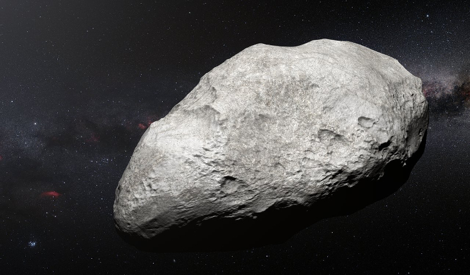

Types of Asteroid
The three broad composition classes of asteroids are
C-Type
The C-type (chondrite) asteroids are most common. They probably consist of clay and silicate rocks, and are dark in appearance.
They are among the most ancient objects in the solar system.

Wanna know more?

M-Type
The M-types are metallic (nickel-iron). The asteroids' compositional differences are related to how far from the Sun they formed.
Some experienced high temperatures after they formed and partly melted,
with iron sinking to the center and forcing basaltic (volcanic) lava to the surface.

Wanna know more?